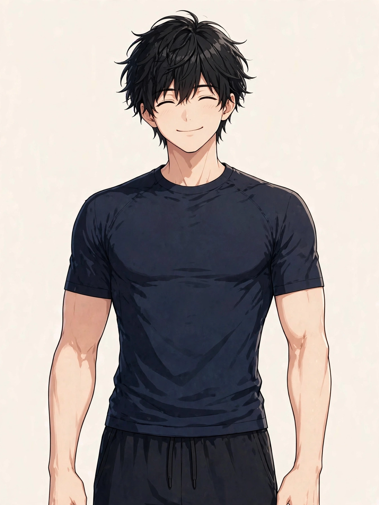
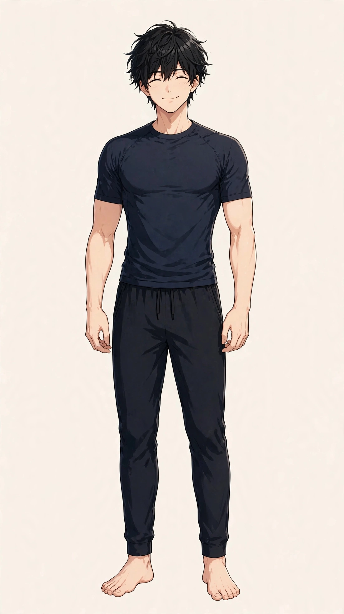
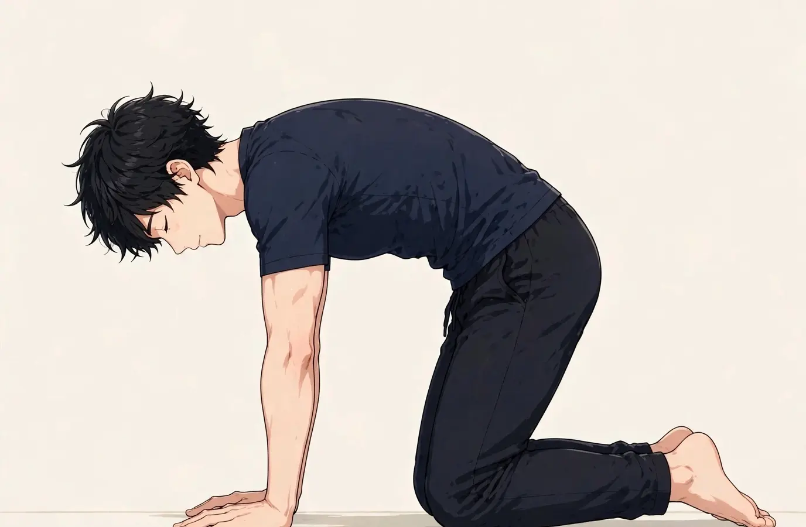

東三国で夏バテの始まりに気になる疲労感
男性の要因整理とセルフケア、受診の目安

梅雨明けが近づく6月の終わりから7月のはじめ、東三国駅へ向かう朝の道でも、シャツが張りつくような蒸し暑さを感じる日が増えてきます。まだ体が暑さに慣れていないこの時期、「目覚めたときから体が重い」「昼ごはんがあまり進まない」「夜は暑くて何度も目が覚める」——そんなことはありませんか。ここでいう「夏バテの始まり」とは、暑さに体が慣れるまでのあいだに、だるさや食欲のむら、寝苦しさが重なって出てくる状態のことです。東三国に住む男性を思い浮かべながら、疲れのわけ、暑い日の過ごし方、受診の目安を整理します。
「夏バテの始まり」の疲れは、どう表れるのか
「夏バテ」とは、暑い日が続くなかで体が重くだるく、疲れや食欲の落ちが重なって感じられる状態を表す言葉として、ふだんからよく使われています。始まりの時期は、梅雨明け前後のじめじめした暑さと、冷えた室内と蒸した外の出入りが増える時期と重なります。朝から体が重い、午後に急に眠気が強くなる、夕方まで頭がすっきりしない——そんな表れ方もあります。だるさ全般については、体のだるさ（全身倦怠感）の症状ページでも触れています。

肩の重さ、腰のだるさ、脚の重だるさが重なると、「体全体が重い」と感じられる場合があります。朝、東三国駅の階段で気づく方もいます。位置は目安です。
暑さに体が追いつく前に重なる、7つのきっかけ
夏のはじめの疲れは、ひとつの理由だけとは限らず、いくつかが折り重なっていることが少なくありません。以下は、東三国で暮らす男性の暑い時期に重なりやすいものです。当てはまる数は人それぞれで、どれかひとつが原因だと決めつけるものではありません。ふだんの夏を思い返してみてください。
- 梅雨明け前後のじめじめした暑さ：6月の終わりから7月は気温も湿気も高く、汗が乾きにくい日が続きます。淀川沿いは風が抜ける日もありますが、湿気の多い日は体に熱がこもりやすく、重だるさを感じやすくなる場合があります
- 冷えた室内と蒸した外の行き来：御堂筋線の冷えた車内や冷房の効いた職場と、蒸し暑い外の行き来が増えます。冷えた場所と暑い場所を行き来するうちに、体が温度の切り替えに追われ、疲れとして感じられる場合があります。負担については、寒暖差疲労（季節の変わり目の不調）の症状ページもあわせてご覧ください
- 冷たいものが増えて食欲にむらが出ること：暑い日は冷たい飲み物や食事が増え、食べる量や中身が変わりやすくなります。食欲に波が出ると、午後の眠気や体の重さにつながる場合があります
- 汗の量に水分が追いつかないこと：汗をかく量が増える時期は、こまめに水分をとることがいつもより大切になります。水分をとる機会の少ない日は、体の重さや頭の重さを意識しやすくなる場合があります
- 夜も気温が下がらず、眠りが浅くなること：夜も気温が下がりにくい日は、寝つきが悪くなったり夜中に目が覚めたりして、眠りが浅くなります。浅い眠りが続くと、朝の重さを意識しやすくなります
- 暑さを避けて歩く量が減ること：日中の暑さを避けるうちに、歩く距離や外出の回数が減ります。淀川の河川敷へ行く機会も減りがちで、動く時間が少ない日が続くと、脚や腰の重だるさを感じやすくなる場合があります
- 慣れない暑さのなかの朝の通勤：暑さに体が慣れていない時期は、朝の御堂筋線や蒸し暑いホームで、スーツ姿のまま立ち続ける時間がふだん以上にこたえます。通勤のあと肩や背中に力が入ったままになり、疲れとして感じられる場合があります
出勤前の河川敷の朝を生かす、暑い時期の整え方
暑い時期のセルフケアは、体を暑さに少しずつ慣らしながら、水分と食事、眠りのリズムを整えていくことです。強く押したり無理な姿勢を続けたりはせず、痛みやしびれがあるときは無理をしないでください。気になる様子が強いときは、セルフケアより先に医療機関へ相談を。
- 河川敷の朝歩きを日課にする：日中が暑い分、出勤前の涼しいうちに淀川の河川敷を歩く習慣を入れてみましょう。東三国駅から歩いて行ける距離で、まずは近場を短い距離からでかまいません。汗をかいた日は水分もとってください
- 渇きを感じる前に、こまめに水分を：汗をかく日は、のどが渇いたと気づく前に、少しずつ水分をとるようにしましょう。常温の水や麦茶など、飲みやすいものを手元に置いておくと続けやすくなります
- 食べにくい日は温かい汁物から始める：暑い日に食欲が湧かないときは、冷たいものだけにならないよう、温かい汁物から少しずつ口にしてみましょう。食事の時間をそろえることも、食欲の波を見直す手がかりになります
- 冷房は外気との差を広げすぎない：冷房の設定は、外気との差が大きくなりすぎない温度を目安にし、スーツの上着を羽織ったり脱いだりして調整しましょう。職場では、冷房の風が直接当たらない席を選ぶ工夫もあります
- 寝る前はぬるめの湯船、寝室はほどよい室温に：暑い日も、ぬるめのお湯に肩まで浸かると、寝つきの切り替えを作りやすくなります。寝室は、暑すぎず寒すぎない室温を目安にしましょう。夜の寝つきは、コラム「東三国で夜に気になる寝つきと疲労感」もあわせてご覧ください
- 四つ這いになって背中を丸める・反らす：仕事の合間や帰宅後に、四つ這いで背中を丸めたり反らしたりする動きをゆっくり行いましょう。手順は図2のとおりです。痛みや引っかかりがあれば無理をしないでください
- 暑い日の様子を手帳に書き留める：「何時に起きて、どんなふうに感じたか」「暑い日はどう過ごしたか」を手帳に書き留めると、暑さに体が慣れていく様子を振り返る手がかりになります
7つを一度に全部やろうとせず、続けられそうなものを一つだけ選ぶところから始めてください。感じ方には個人差があり、その日の過ごし方や気温でも変わります。四つ這いの動きは、図2を参考に、無理のない範囲で行ってください。

①四つ這いになる ②息を吐きながら背中を丸める ③息を吸いながら軽く反らす。①〜③を5回ほど繰り返します。朝や帰宅後に取り入れられます。
こんな様子が出たら、先に医療機関へ相談を
次のような様子があるときは、セルフケアや当院のケアより先に、かかりつけ医や医療機関へ相談してください。当院は医療機関ではなく、診断や治療はしません。「夏バテの始まりだろう」と思っていても、ほかの原因の場合があります。
- 数週間以上続く疲れが、仕事や家事に支障を出している
- 疲れとともに、発熱や体重の変化、食欲の低下がある
- 息切れや動悸、胸の違和感を感じる
- 朝の体の重さが、日を追うごとに強くなっている
- 疲れとともに、気分の落ち込みや不安が長く続く
- セルフケアを続けても、数週間以上変わらない
当てはまるものがなくても、気になる様子が続くときは、早めに相談することが大切です。
北辰堂のご案内
北辰堂は、大阪市淀川区東三国二丁目にある男性専用の整体院です。施術歴30年の平賀伸人（鍼灸師・国家資格）が、整体とリラクゼーションを行います。当院では鍼灸施術は行いません。営業は平日・土曜17:00〜22:00、日曜10:00〜22:00の完全予約制です。夏バテの始まりに疲労感が気になる方は、仕事帰りの平日・土曜の夕方や、日曜の時間帯に、御堂筋線での通勤や暑い時期の過ごし方も含めてご相談いただけます。プライバシーへの配慮のため、詳しい住所はご予約確定後にLINEでご案内します。
料金は60分 初回2,000円／2回目以降6,000円、90分 初回3,000円／2回目以降9,000円で、お支払いは現金のみです。施術を受けたからといって疲労感の状態がどうなるかをお約束することはできませんが、その日の体の状態を確認しながら、全身の様子も見て、ゆっくり体を預けられる時間をご用意しています。暑い時期の過ごし方や、ふだんの体の使い方など、日常で気になっていることも、カウンセリングの際にお聞かせください。
コースの内容はメニュー・料金、施術者は施術者について、気になるお悩みの例は北辰堂について、ご予約の流れは当日の流れとLINE予約の下書きづくり、場所についてはアクセスをご覧ください。よくある質問もご参考ください。
ほかのコラム記事
ご予約・ご相談はLINEから
東三国・新大阪・淀川区周辺で、体のケアの相談先をお探しの方は、LINE公式アカウント（北辰堂）からお気軽にご連絡ください。現在の状態をお聞きしたうえで、施術の進め方をご案内します。
LINEで予約する